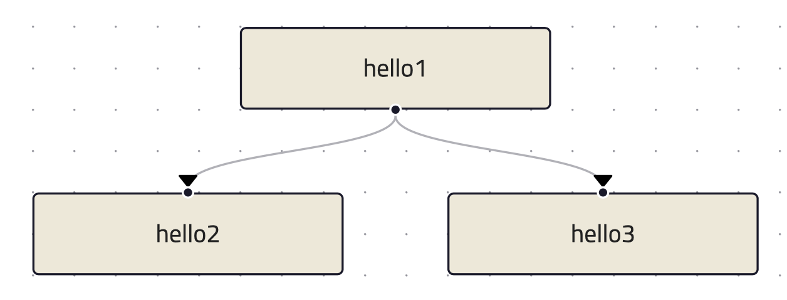

Getting started
This tutorial explains how to implement an executor in Python. This also provides insight into the internal workings of ColonyOS making it easier to the utilize pre-developed executors, such as various container executors.
This tutorial describes how to implement an executor in Python. This also understanding how ColonyOS works internally when using already developed executors, such as different container executors.
First, follow instructions at Getting started and install the colonies binary.
Starting a Colonies server
First, follow instructions at Docker-compose. In short:
git clone https://github.com/colonyos/colonies.git
source docker-compose.env
docker-compose up
Installing Python SDK
Note that the SDK has only be tested on Linux and MacOS.
pip3 install pycolonies
The library assumes libcryptolib.so is installed in /usr/local/lib or available in the LD library path. However, it is also possible to set the path to the libcryptolib.so using an environmental variable.
export CRYPTOLIB="./lib/cryptolib.so"
The libcryptolib.so is available in the PyColonies github repo in the lib directory.
git clone https://github.com/colonyos/pycolonies.git
Connecting to a Colonies server
The code below configures a Python client to connect to a Colonies server running at localhost:50080.
from pycolonies import Colonies
colonies = Colonies("localhost", 50080)
To be able to use the client and Python SDK, the following settings is required:
A name of colony.
A valid private key of a user or executor member of the colony.
Optionally, a colony private key to register new executors or users.
An alternative method is to use the colonies_client() function. It will parse the
following environmental variables:
COLONIES_SERVER_HOSTCOLONIES_SERVER_PORTCOLONIES_SERVER_TLSCOLONIES_COLONY_NAMECOLONIES_EXECUTOR_NAMECOLONIES_PRVKEYCOLONIES_COLONY_PRVKEY
Just make sure to source docker-compose.env before starting the Python script.
from pycolonies import colonies_client
colonies, colonyname, colony_prvkey, executor_name, prvkey = colonies_client()
Registering an executor
The first step to register an executor is to create a new ECDSA key pair.
crypto = Crypto()
executor_prvkey = crypto.prvkey()
executorid = crypto.id(executor_prvkey)
The executor_id is essentially a SHA3-256 hash of the public key, which itself is generated from the private key. The Colonies server derives the public key from message signatures to reconstruct the executor_id. It then searches for the executor_id in its internal database to verify whether the executor is an authorized member of the colony. The executor_id must therefore be specified when registering a new executor. Additionally, only the colony owner has the authority to add an executor. Consequently, the add_executor() function requires the colony’s private key as an argument.
Note that the process of adding an executor in done in two steps. Once an executor is added, it need to be approved by calling approve_executor() function in order to get process assignments.
executor = {
"executorname": executor_name,
"executorid": executorid,
"colonyname": colonyname,
"executortype": "helloworld-executor"
}
try:
executor = self.colonies.add_executor(executor, colony_prvkey)
self.colonies.approve_executor(self.colonyname, executor_name, colony_prvkey)
self.colonies.add_function(executor_name,
colonyname,
"helloworld",
executor_prvkey)
except Exception as err:
print(err)
os._exit(0)
print("Executor", executorid, "registered")
Process assignments
An executor can get a process assignments by calling the assign() function. The function takes executor_prvkey as argument and a timeout how long time the call should block, in this case 10 seconds.
process = colonies.assign(self.colonyname, 10, self.executor_prvkey)
The process object contains the following information:
{'processid': '9a580b18c9a6cb9716097ff02dd54b4bb18177e8241fafc1f5c919e421b5b586',
'initiatorid': '3fc05cf3df4b494e95d6a3d297a34f19938f7daa7422ab0d4f794454133341ac',
'initiatorname': 'myuser',
'assignedexecutorid': '50900712cb50da8e14ef45aabb037c56a94264a6948da71344228645f2267a21',
'isassigned': True,
'state': 1,
'prioritytime': 1703010866089369404,
'submissiontime': '2023-12-19T19:34:26.089369+01:00',
'starttime': '2023-12-19T18:35:43.513739591Z',
'endtime': '0001-01-01T00:53:28+00:53',
'waitdeadline': '0001-01-01T00:53:28+00:53',
'execdeadline': '0001-01-01T00:53:28+00:53',
'retries': 0,
'attributes': [],
'spec': {'nodename': '', 'funcname': 'helloworld', 'args': [], 'kwargs': {}, 'priority': 0, 'maxwaittime': -1, 'maxexectime': -1, 'maxretries': 0, 'conditions': {'colonyname': 'dev', 'executorids': [], 'executortype': 'helloworld-executor', 'dependencies': [], 'nodes': 0, 'cpu': '', 'processes': 0, 'processes-per-node': 0, 'mem': '', 'storage': '', 'gpu': {'name': '', 'mem': '', 'count': 0, 'nodecount': 0}, 'walltime': 0}, 'label': '', 'fs': {'mount': '', 'snapshots': None, 'dirs': None}, 'env': {}},
'waitforparents': False,
'parents': [],
'children': [],
'processgraphid': '',
'in': [],
'out': [],
'errors': []}
Once a process is assigned to an executor, that executor gains exclusive access to it. Each process can be assigned to only one executor, and only the executor assigned to a specific process has the right to add logs, attributes or close it. The following code demonstrates how to close an assigned process with the output helloworld.
if process["spec"]["funcname"] == "helloworld":
self.colonies.close(process["processid"], ["helloworld"], executor_prvkey)
Complete example
from pycolonies import Crypto
from pycolonies import Colonies
from pycolonies import colonies_client
import signal
import os
import uuid
class PythonExecutor:
def __init__(self):
colonies, colonyname, colony_prvkey, executor_name, prvkey = colonies_client()
self.colonies = colonies
self.colonyname = colonyname
self.colony_prvkey = colony_prvkey
self.executor_name = "helloworld-executor"
self.executor_type = "helloworld-executor"
crypto = Crypto()
self.executor_prvkey = crypto.prvkey()
self.executorid = crypto.id(self.executor_prvkey)
self.register()
def register(self):
executor = {
"executorname": self.executor_name,
"executorid": self.executorid,
"colonyname": self.colonyname,
"executortype": self.executor_type
}
try:
executor = self.colonies.add_executor(executor, self.colony_prvkey)
self.colonies.approve_executor(self.colonyname, self.executor_name, self.colony_prvkey)
self.colonies.add_function(self.executor_name,
self.colonyname,
"helloworld",
self.executor_prvkey)
except Exception as err:
print(err)
os._exit(0)
print("Executor", self.executorid, "registered")
def start(self):
while (True):
try:
process = self.colonies.assign(self.colonyname, 10, self.executor_prvkey)
print("Process", process["processid"], "is assigned to executor")
if process["spec"]["funcname"] == "helloworld":
self.colonies.close(process["processid"], ["helloworld"], self.executor_prvkey)
except Exception as err:
print(err)
pass
def unregister(self):
self.colonies.remove_executor(self.colonyname, self.executor_name, self.colony_prvkey)
print("Executor", self.executorid, "unregistered")
os._exit(0)
def sigint_handler(signum, frame):
executor.unregister()
if __name__ == '__main__':
signal.signal(signal.SIGINT, sigint_handler)
executor = PythonExecutor()
executor.start()
Start the executor by typing:
python3 helloworld_executor.py
Executor fca266fa7a5ca88a60129f6d19f189ce6f8ba086ec9b06e7eebe9350bd777dc0 registered
To call the helloworld function we need to submit the following function specification:
{
"conditions": {
"executortype": "helloworld-executor"
},
"funcname": "helloworld"
}
Note that the executortype must match executor type of the executor, which in our case is helloworld-executor.
colonies function submit --spec helloworld.json
Below is an alternative method to call the function:
colonies function exec --func helloworld --targettype helloworld-executor
It is also possible to submit function specifications directly in Python. Save the Python code below to a
new file called helloworld.py.
from pycolonies import func_spec
from pycolonies import colonies_client
colonies, colonyname, colony_prvkey, executor_name, prvkey = colonies_client()
func_spec = func_spec(func="helloworld",
args=[],
colonyname=colonyname,
executortype="helloworld-executor",
priority=200,
maxexectime=10,
maxretries=3,
maxwaittime=100)
# submit the function spec to the colonies server
process = colonies.submit(func_spec, prvkey)
print("Process", process["processid"], "submitted")
# wait for the process to be executed
process = colonies.wait(process, 10, prvkey)
print(process["out"][0])
python3 helloworld.py
Process bacf4309da2f19db96e21c4ed16cda0b41e7045e6e81550d90d679725855ee71 submitted
helloworld
Logs
Logs can simply be added by calling the add_log() function. Note that only the assigned executor may add logs.
self.colonies.add_log(process["processid"], "Hello from executor\n", self.executor_prvkey)
colonies function submit --spec helloworld.json --follow
INFO[0000] Process submitted ProcessId=c107281fceed8c7636debecca996bc8f714ca2301087e99a26fb7b93d5e5b4f9
INFO[0000] Printing logs from process ProcessId=c107281fceed8c7636debecca996bc8f714ca2301087e99a26fb7b93d5e5b4f9
Hello from executor
INFO[0001] Process finished successfully ProcessId=c107281fceed8c7636debecca996bc8f714ca2301087e99a26fb7b93d5e5b4f9
Workflows
Workflows are simply function specification with dependencies. The Python code below will create a workflow with the following shape.
from pycolonies import colonies_client
from pycolonies import func_spec
from pycolonies import Workflow
import copy
colonies, colonyname, colony_prvkey, executorid, executor_prvkey = colonies_client()
func_spec = func_spec(func="helloworld",
args=[],
colonyname=colonyname,
executortype="helloworld-executor",
maxexectime=10,
maxretries=3,
maxwaittime=100)
wf = Workflow(colonyname)
wf.add(func_spec, nodename="hello1", dependencies=[])
wf.add(copy.deepcopy(func_spec), nodename="hello2", dependencies=["hello1"])
wf.add(copy.deepcopy(func_spec), nodename="hello3", dependencies=["hello1"])
colonies.submit(wf, executor_prvkey)
The hello1 node must execute before hello2 and hello3 nodes can run. Note that each node may call a function
in any executor part of the same colony. This feature enables implementation of cross-platform workflows that
operate seamlessly across a continuum of executors
Excercises
Execution contraints
Modify the maxexectime attribute in the function specification to 20 seconds, and add an additional delay — using sleep(30) — in the executor prior to closing the process.
import time
def start(self):
while (True):
try:
process = self.colonies.assign(self.colonyname, 10, self.executor_prvkey)
time.sleep(30) # the helloworld function now takes 30 seconds to complete
print("Process", process["processid"], "is assigned to executor")
if process["spec"]["funcname"] == "helloworld":
self.colonies.close(process["processid"], ["helloworld"], self.executor_prvkey)
except Exception as err:
print(err)
pass
In this case, the process will be unassigned from the executor and immediately reassigned to the same executor. This will be repated
3 times (maxretries) until the process is closed as failed.
Load balancing
Make it possible to start multiple executors by setting the executor_name to a random number or making it possible to specify an
executor name as an argument to the helloworld_executor.py script. Sumbit several function specifications and notice how the they become load balanced between the executors.